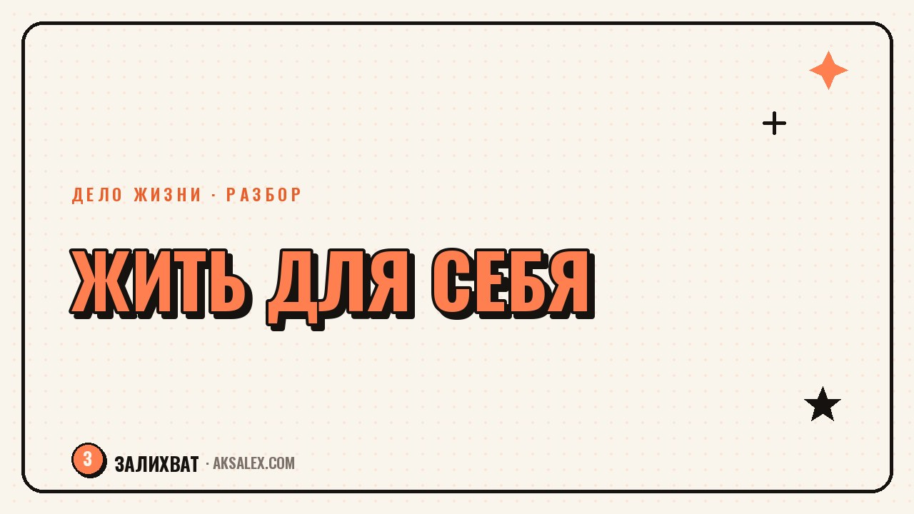

Как перестать всем угождать и начать жить для себя

Привычка всем угождать редко выглядит как слабость - наоборот, со стороны такого человека называют удобным, надёжным, отзывчивым. Проблема в том, что внутри накапливается усталость от постоянной подстройки под чужие ожидания, а свои желания откладываются настолько часто, что их становится сложно вспомнить. Разберём, откуда берётся эта привычка, чем она обходится и как постепенно вернуть себе право выбирать, а не только соглашаться.
Откуда берётся привычка угождать всем
Чаще всего это не врождённая черта, а выученная стратегия. В детстве или в токсичных отношениях согласие и уступчивость были способом избежать конфликта, заслужить одобрение или сохранить мир вокруг себя. Стратегия сработала, закрепилась и стала автоматической реакцией на любое недовольство рядом.
Как эта привычка проявляется во взрослой жизни
- Трудно сказать «нет» даже на неудобную просьбу
- Своё мнение озвучивается только после того, как все остальные высказались
- Чувство вины появляется не из-за реального проступка, а из-за отказа кому-то помочь
- Решения принимаются с оглядкой на то, что подумают другие, а не на собственные желания
Важно: это не диагноз и не повод винить себя ещё сильнее. Это рабочая привычка, которую можно менять постепенно, без резких разрывов со всеми вокруг.
Чем постоянное угождение обходится в долгую
Самая заметная цена - хроническая усталость без явной причины. Человек, который держит в голове ожидания десяти разных людей, тратит на это энергию незаметно для себя, а потом удивляется, почему к вечеру нет сил даже на то, что действительно хочется делать.
Вторая цена менее очевидна: окружающие постепенно перестают спрашивать, что хочет сам человек, потому что привыкли, что он согласится на любой вариант. Собственные желания становятся невидимыми не только для других, но и для самого человека - их давно не тренируют замечать.
Угождение не делает отношения крепче. Оно делает их однобокими: один человек подстраивается, другой привыкает, что подстраиваться будут всегда.
Как начать замечать собственные желания
Первый шаг не про отказы и конфликты, а про то, чтобы заново научиться слышать себя. Многие, кто долго угождал другим, честно не знают, чего хотят сами - привычка спрашивать себя об этом давно не использовалась.
Упражнение на неделю
- Каждый вечер запиши одну ситуацию за день, где согласился, хотя хотелось отказать
- Отметь, что именно почувствовал в момент согласия - страх, вину, усталость
- Спроси себя, чего хотелось бы на самом деле в этой ситуации
- Не меняй поведение сразу - на этом этапе достаточно только замечать
Через неделю таких записей становится видна закономерность: обычно угождение концентрируется вокруг одного-двух людей или одной ситуации, например работы. С этим узким местом и имеет смысл начинать работать дальше.
Как говорить «нет» без разрыва отношений
Отказ не обязан звучать резко. Самая частая ошибка новичка в этом - пытаться сразу сказать жёсткое «нет» там, где раньше было автоматическое «да», и пугаться реакции собеседника. Переход получается мягче, если начинать с маленьких, безопасных ситуаций.
| Ситуация | Привычный ответ | Промежуточный шаг |
|---|---|---|
| Просят задержаться после работы без веской причины | Соглашаться сразу | Сказать «дай мне подумать и отвечу через час» |
| Зовут на событие, куда не хочется идти | Придумывать оправдание и идти | Честно сказать «в этот раз не смогу, спасибо, что позвали» |
| Просят одолжить деньги в неудобный момент | Давать, даже если это бьёт по бюджету | Назвать сумму, которую реально комфортно дать, или честно отказать |
Фраза «дай мне подумать» работает почти всегда - она покупает время, чтобы ответить из своих реальных желаний, а не из автоматического рефлекса угодить.
Что делать с чувством вины после отказа
Вина после первых осознанных отказов - нормальная часть процесса, а не сигнал, что ты поступил неправильно. Тело и привычка реагируют по старой схеме, пока не накопится новый опыт: отказ не привёл к катастрофе, отношения не разрушились.
- Напомни себе, что один отказ не отменяет всю историю отношений
- Отследи, разрушилось ли что-то реально, или только твоё беспокойство
- Дай себе время привыкнуть - новая реакция формируется не за один раз
- Если вина становится постоянной и мешает жить, это повод обратиться к психологу
Частые вопросы
Как перестать всем угождать, если это длится всю жизнь?
Начни с малого: замечай ситуации, где соглашаешься против своих желаний, без попытки сразу всё изменить. Привычка формировалась годами, и менять её тоже стоит постепенно, через маленькие осознанные шаги, а не через один резкий разворот.
Почему трудно сказать «нет» даже в мелочах?
Чаще всего это выученная реакция избегать конфликта или неодобрения, закреплённая ещё в детстве или в прошлых отношениях. Отказ ощущается как риск потерять расположение человека, даже если рационально такой риск минимален.
Как перестать всем угождать и жить для себя без чувства эгоизма?
Учитывать свои желания - это не эгоизм, а баланс, в котором твои интересы наконец начинают весить столько же, сколько интересы других. Эгоизм - это игнорировать чужие границы, а забота о себе такого не требует.
Что делать, если после отказа человек обиделся?
Обида другого человека - это его реакция, а не доказательство твоей неправоты. Можно спокойно объяснить причину отказа, но не обязательно менять решение только для того, чтобы избежать чужого недовольства.
Нужен ли психолог, чтобы избавиться от привычки угождать?
Не всегда, многие справляются самостоятельно через осознанные маленькие шаги и наблюдение за своими реакциями. Но если привычка связана с глубокой тревогой, паническим страхом конфликта или постоянным чувством вины, работа с психологом ускорит процесс и сделает его безопаснее.
Раз тема оказалась полезной, вот что почитать следующим. Как начать блог в TikTok: оформление профиля, форматы роликов и первая серия контента без лишнего стресса.
Читать статью →а не вручную